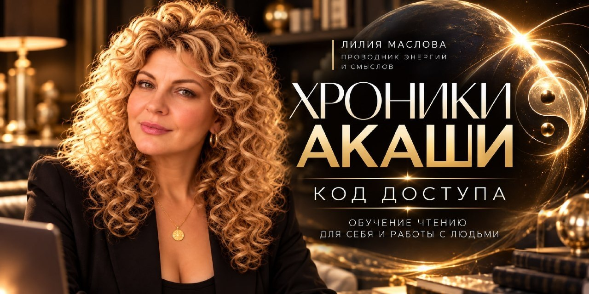

Текущий
Сегодняшняя жизнь: опыт, выборы, отношения, убеждения, события и реакции.
Как этот сценарий выглядит в моей сегодняшней жизни?

От знакомства со своим восприятием — к осознанному исследованию пути Души.
Открыть свой путь ↗Найти лекцию ↗Это твоё учебное пространство: путь обучения, библиотека лекций, конспекты и место для своих наблюдений. Материалы доступны онлайн. Записи встреч, новые лекции и конспекты будут добавляться сюда по мере обучения. Начни с подготовительной недели и знакомства со своим восприятием.
У каждого свой способ восприятия. Дай себе время познакомиться с ним и постепенно выстроить собственную практику чтения.
Открой подготовительную неделю.
Лекции и конспекты в одном месте. Ищи по названию, теме или словам внутри записи.
Сейчас лекции доступны для чтения по присланным расшифровкам. Аудиозаписи появятся здесь после добавления ссылок.
Открой этап, чтобы увидеть темы, практику и ориентиры. Отметки отражают выполненные шаги, а вопросы помогают осмыслить опыт.
Один и тот же сценарий можно исследовать на разных уровнях. Наша задача — различать их и видеть, что действительно влияет на жизнь человека сейчас.
Сегодняшняя жизнь: опыт, выборы, отношения, убеждения, события и реакции.
Повторяющиеся семейные истории, роли, запреты, лояльности, исключённые и тайны.
Более глубокий опыт Души, который в духовной системе обучения связывается с другими воплощениями.
Архетипы, большие сюжеты, коллективные роли и мифологические сценарии.
Опыт Души за пределами земного воплощения в рамках духовной системы обучения.
Какое решение я принимаю сейчас из этого сценария? Что продолжаю делать автоматически? Какое новое действие создаёт другой опыт?
Не обязательно раскрывать все пять уровней. Важнее увидеть тот слой, который помогает понять сегодняшний выбор.
Вернуться к модулю 2 ↗В подкасте каналы исследуются через личные образы, ощущения и связь с органами чувств. Открой каждый, познакомься с примерами и замечай, как устроено твоё собственное восприятие.
Восприятие через внутренние слова, фразы и звучание. В записи этот канал связан и с вниманием к звукам окружающего мира.
«У меня возник голос в голове, не совсем мой, похож чем-то на мужской, но и второй был женский».
В описанном опыте возникали разные внутренние голоса. Ещё отмечены звуки, которые приходят извне, и телесный отклик — волоски на теле встали дыбом.
Какие слова или фразы появились? Каким было их звучание? Что я услышала во внешнем пространстве, а что возникло внутри?
Внутреннее «знаю»: ответ или понимание возникают как целостный отклик. В подкасте это описано через импульс и образ бегущей строки.
«Такая у меня возникла бегущая строка в голове».
«Какой-то импульс возникает, знаю, иду».
В записи знание связывается с восприятием в голове и на уровне сердца. Бегущая строка — образ конкретного опыта из подкаста; у тебя восприятие может складываться иначе.
Что именно я поняла? Было ли это словом, целой мыслью или импульсом? Что возникло сразу, а что я стала объяснять позже?
Восприятие через телесные и чувственные отклики. В записи среди примеров — мурашки, вкус и запах.
«У меня отреагировало все тело, покрылось мурашками, появился привкус во рту, запах в носу».
Этот пример охватывает несколько ощущений одновременно: реакцию тела, вкус и обоняние. Важно сначала описать сам отклик, а затем отдельно записать, какой смысл ты в нём увидела.
Где и что я почувствовала? Как изменилось ощущение? Что я могу описать своими словами, прежде чем делать вывод?
Восприятие через внутренние образы и картины. В духовном языке подкаста этот канал связан с ментальным телом и «ментальными глазами».
«Ясновидение — это связь с ментальным телом. На ментальном теле есть ментальные глаза».
В записи также упоминаются область лба, «третий глаз» и шестая чакра — как элементы духовной модели, через которую объясняется канал.
Какой образ возник? Какие детали я заметила? Как я его описываю и как связываю со своим вопросом?
В записи работа с чувствами описывается как способ лучше замечать и различать своё восприятие. Можно выбрать знакомое действие и уделить ему осознанное внимание.
«Когда вы трогаете дерево, что вы ощущаете под ладонью?»
Прикоснуться к дереву и заметить, что ощущается под ладонью. Наблюдать за телом во время прогулки или мягкой растяжки.
Во время еды заметить вкус, запах и температуру. В подкасте приведён простой пример: «Я сейчас кушаю картошку, мне горячо».
Осознанно замечать звуки вокруг, слушать классическую музыку, устраивать себе минуты тишины.
Рассматривать картины, посещать музеи, замечать детали изображений, читать, заниматься творчеством.
Гулять по лесу, наблюдать воду и другие стихии, сажать цветы, помогать животным и обращаться к практике благодарности.
Эти инструменты помогают вести записи и готовить вопросы к встречам. Алгоритмы входа и чтения ты изучаешь с наставником.
Выбери направление и запиши ситуацию. Получишь открытые вопросы для дальнейшего исследования.
Выбери, что сейчас происходит. Атлас подскажет, к чему вернуться.
Записывай опыт своими словами. Разделяй то, что заметила, и то, как ты это понимаешь. В записях о других людях используй условные обозначения.
Конспект Лилии: главная логика работы, состояние, сонастройка, доверие, каналы восприятия и открытые вопросы.
Открыть конспект PDF ↗Взгляд Лилии на единство, опыт Души и принятие своих частей. Материал из пространства «Код Богини» — для знакомства с духовной философией автора.
«Бог — это бесконечная, безусловная любовь ко всему сущему, тотальное принятие всего таким, как оно есть».
Что в этом взгляде откликается мне? Какие свои части мне трудно принимать? Что я хочу обсудить с Лилией?
«Вопрос не должен предполагать ответ да или нет».
«А значит через какие действия я могу туда попасть».
Стоп-вопросы о предсказании будущего, ответах «да или нет» и чужих мыслях в Хрониках не задаём. Работаем со своей актуальной ситуацией: что важно увидеть, какой сценарий проявляется, какие действия можно предпринять.
Что мне важно понять? Как я могу прийти к желаемому?
Какие мои действия и решения имеют значение в этой ситуации?
Что из полученного я могу применить и попробовать на практике?
«Потому как зачастую просто узнать информацию из Хроник это просто узнать информацию из Хроник. Без действий она не даст никаких изменений в материи».Открыть мастерскую запросов ↗
В своей духовной модели Лилия рассматривает Душу, Дух, сознание, подсознание, эго, тень и физическое тело. Эти понятия помогают знакомиться с авторским подходом и исследовать своё восприятие.
«Наша система человека состоит из души, духа, сознания, подсознания, тени и физическое тело».
В изложении Лилии Душа связана с любовью, внутренним импульсом, желаниями и идеями. Высшее Я описывается как более объёмная часть Души.
Образ из подкаста — «флешка», на которой записана память жизненного опыта человека.
Тело названо «аватаром» или «костюмом», через который Душа проживает земной опыт.
Лилия описывает эго через задачу выживания, привычные реакции и стремление удержать знакомое. На обучении эта тема связана с наблюдением за ожиданиями и личными интерпретациями при чтении.
В подкасте тень связывается с тем, что человек хотел проявить, но подавил или счёл небезопасным.
Названы среди частей системы человека. Их подробные определения в этой записи не раскрываются.
Чего я ожидаю от ответа? Где включаются мои привычные объяснения? Что я заметила прежде, чем начала это толковать?
«Помните, что те, кто сегодня помогают вам стать лучше, тоже прошли сквозь долгий путь — через свои проработки, свое обучение, свой опыт, оттачивали свое мастерство и постоянно совершенствуются».
В авторском взгляде Лилии энергообмен связан с ценностью времени, знаний, опыта и готовностью давать и принимать. В работе с человеком важно заранее прояснять формат встречи и договорённости.
Если объявлен добровольный донат, его размер остаётся выбором человека. Условия платной встречи согласуются заранее.
Большой вебинар
Ты можешь проживать свою жизнь. А можешь — не свою, даже не подозревая, что снова и снова повторяешь выборы, страхи и судьбы своего Рода.
Где заканчивается родовой сценарий и начинается твой собственный путь?
Подготовительная неделя и четыре недели основного обучения.
Живые встречи в Zoom с Лилией.
Групповых практик для закрепления опыта.
Месяцев доступа к записям и материалам.
Самостоятельные задания по будням, конспекты, дополнительные материалы и менторские практики. Разбор вопросов и обратная связь.
Отметки и записи сохраняются в этом браузере на этом устройстве. Сделай копию, чтобы перенести их или восстановить после очистки браузера. Лилия не получает эти записи автоматически.